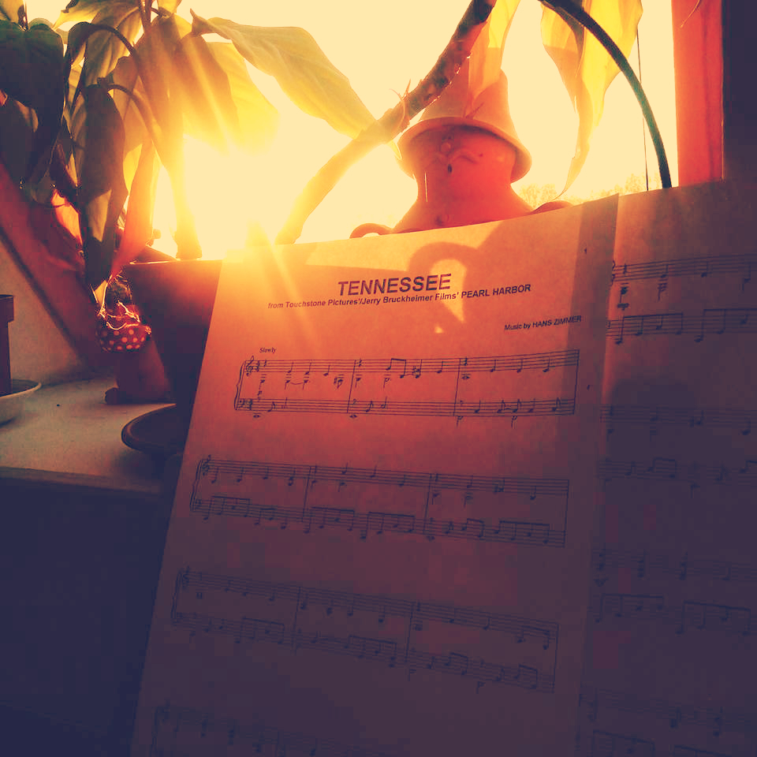
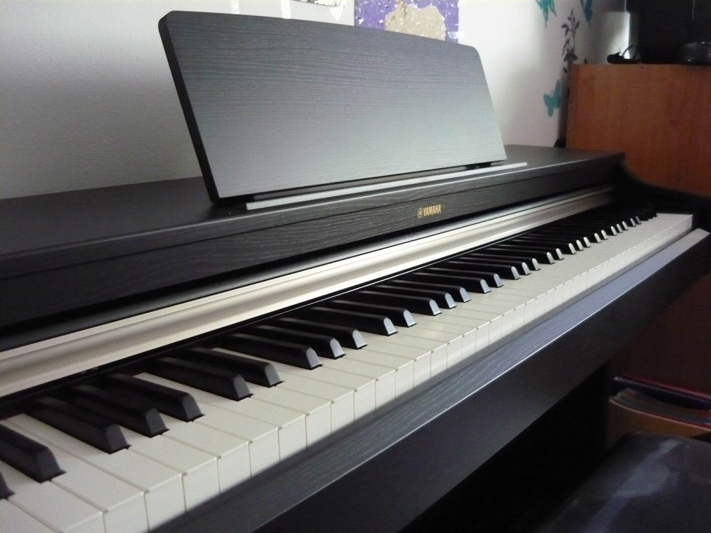
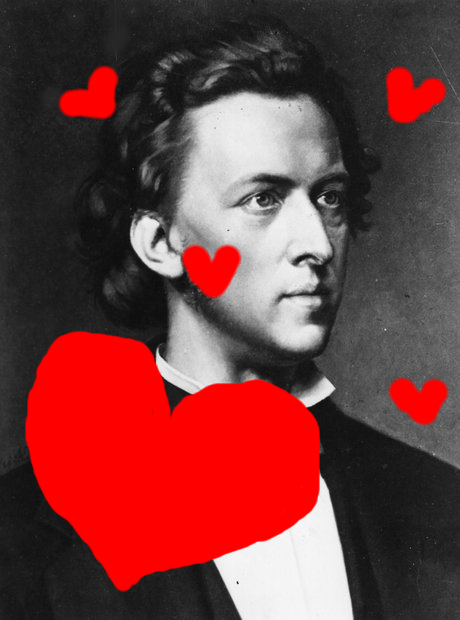

Ezt a levelet azért írom, hogy Józsi bácsi megismerhesse, mit jelentett számomra ez a 2 év. Remélem az üzenete motivációként szolgál, hogy ha Tanár Úrnak valamikor szüksége lenne rá.
|
Úgy gondolom, hogy egy nem átlagos tanárhoz nem illenek átlagos levelek. Ez a levél sem az. Ha nem is a megszokott módon, de kézzel írott minden sor és gondolat (hiszen a weboldalt is valakinek meg kellett csinálni ;D). |
|
|
Mint derült égből villámcsapás érkeztem 2015 szeptemberében. Indíttatásom hátterében egy elhibázott döntés állt, amit 9 év versenyúszás után alaposan megbántam. De talán annyira nem is volt olyan rossz döntés. Ha akkor, 11 éve nem úszni mentem volna, akkor valószínűleg nem Józsi bácsinak írnám ezt a levelet és ha találkoztunk volna is, más ember állt volna Tanár Úr előtt. |
|
Emlékszem a legelső órámra, amikor az izgulós, remegő kezes előadásmódomban "Emeli Sande - Read all about it" című számát mondjuk úgy, eljátszottam. Még mindig előttem van Tanár Úr arca, mikor nem a megszokott "Boci-boci tarkás" kezdést produkáltam. Nem mintha az bármivel is minőségibb lett volna (mikor azt se tudtam, hogy hogyan kéne a pedált használni hozzá). De elmondhatom, hogy ez az egyik legnagyszerűbb kaland kezdete volt.
"Mindig félünk az újtól, attól, amit nem ismerünk, vagy még nem tapasztaltunk. De ha nem vágunk bele, soha nem tudjuk meg, hogy megéri-e a kockázatot."
|
Ezután elkezdődtek az igazi zongoraórák. Nem hiszem, hogy létezne még egy ilyen türelmes tanár, aki el tudja viselni, hogy drága tanítványának annyit jár a szája. Imádtam és még most is imádom csinálni a dolgom. A zongorázás számomra sosem volt megterhelő, az órák a felüdülést jelentik a mai napig is. Szerencsére nagyon jól haladtam/haladok, amit észre se vennék Józsi bácsi állandó dícsérő szavai nélkül, mert én magammal sosem voltam hú de nagyon elégedett. |
|
|
Egy lelkes amatőr zeneiskolás élete valószínű haláli unalmas volna, ha nem lenne alkalom rá, hogy produkálja magát. Milyen nagyszerű, hogy erre minimum 2 lehetősége is van egy évben: Tanár Úr tudja, hogy ha lehetne én sosem élnék ezzel a lehetőséggel, de ha már kell, akkor ki kell hozni belőle a legtöbbet. Egy elborult gondolat megvalósításaként az első év végén egyik kedvenc zeneszerzőm, Hans Zimmer művét a Tennessee-t játszottam. Utólag belegondolva nem tudom, hogy hoztam össze, de örülök, hogy Tanár Úrnak annyira tetszett :D |
 |
Hirtelen kinyílt egy világ előttem. Elkezdtem úgy érezni, hogy semmi sem lehetetlen. Ha nagyon akarom, bármelyik darabot meg tudom tanulni. Rengeteget játszottam. Most is azt teszem. Egész délutánok, esték telnek el úgy, hogy észre sem veszem. Csak ülök, játszom és a körülöttem lévő világ megszűnik létezni.
"Soha egyetlen percig nem fordult meg a fejemben, hogy feladom. Mert hiszek abban, hogy az ember legfőbb dolga ezen a világon, hogy az álmait valóra váltsa. Higgyétek el, sohasem késő!"
- Harle Tamás
|
A legnagyobb problémám a hangszer volt. Egy kis szintivel nem lehet sokáig kihúzni, ha az ember tényleg komolyan gondolja a zenélést. Nem volt más választásom: gyűjtenem kellett egy újra. A nyár nagyon nehéz volt. Szinte minden nap dolgoztam. Reggel korán kelés, és délután hullafáradtan hazaérkezés. Más nem is nagyon fért bele a szünetbe. De a befektetett munka meghozta gyümölcsét. 2 és fél hónap után már szerencsés gazdája lehettem/lehetek ennek a gyönyörűségnek, aki mindig itt van számomra. :) |
 |
Idén hatalmas célokat tűztem ki magam elé. Itt jött el az a pont, mikor a dolgok nem mindig úgy mentek, ahogy én szerettem volna. Mondhatom: Túlvállaltam magam. Mellesleg még mindig nem tudok kottából játszani és bizonyos apró dolgokat sokkal többet kellenne gyakorolnom.
"Minél jobban szeretek valamit, annál többet vagyok képes tenni érte. Ha a szívem 100 százalékosan akarja, akkor a testem inkább belepusztul. Belerakom a maximumot."
- Katus Attila
|
A Chopin iránti szeretetem a két év során folyamatosan erősödött. A művei annyira megérintenek, olyan mértékben tudok azonosulni velük, hogy alig várom, hogy én is játszhassak belőlük. Tisztában vagyok vele, hogy sokszor Tanár Úr tűrőképességét feszegetem :D és megígérem, hogy a Kuhlau Sonatina-ba is annyi engergiát fektetek, mintha egy Chopin darab lenne. |
 |
Idén meg kellett küzdenem magammal is. Annak ellenére, hogy meg sem kérdeztek (számomra) rengeteg fellépésen kísérhettem Ildikó néni kis fuvolásait. Ezek a napok többé-kevésbé jól sikerültek, de az akkor jelenlévő izgalmat még mindig nem tudtam leküzdeni.
"Valójában az a bátor ember, aki ellenáll a félelemnek, aki legyőzi a félelmét - nem pedig az, akiből hiányzik a félelem."
- Mark Twain
|
Csupán csak 2 év telt el eddig, de hihetetlen mennyi mindent élhettem át ez idő alatt. A zongoratanárom, aki mindvégig tanított, elviselt, mikor kiállhatatlan voltam és együtt nevetett velem minden apró hülyeségen. Ön, aki órákat hallgatta a kifogásaimat, magyarázataimat arról, hogy most éppen miért nem tudtam normálisan megcsinálni a dolgokat (ahelyett, hogy zongoráztam volna). |
A zene megváltoztatott. Sokkal szocálisabb lettem és nagyszerű embereket ismerhettem meg. Ha zenész nem is lesz belőlem, azt megígérhetem, hogy nem hagyok fel vele és ugyanilyen lelkesedéssel fogom folytatni a következő évben is. (Persze ha meg lesz a kettes)
"Tanárbácsi szeret téged. :3"
- Balogh József